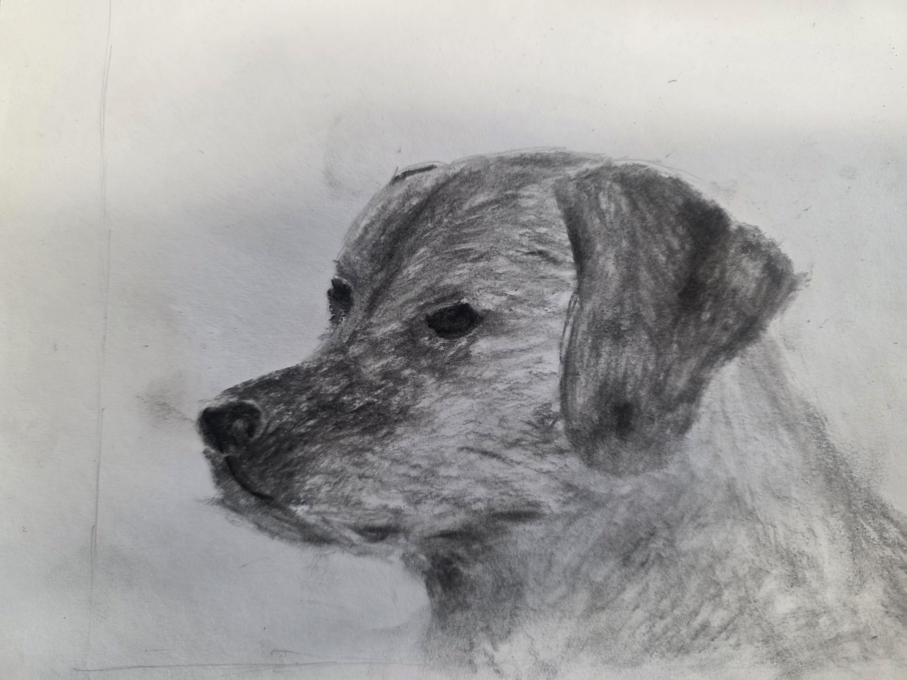
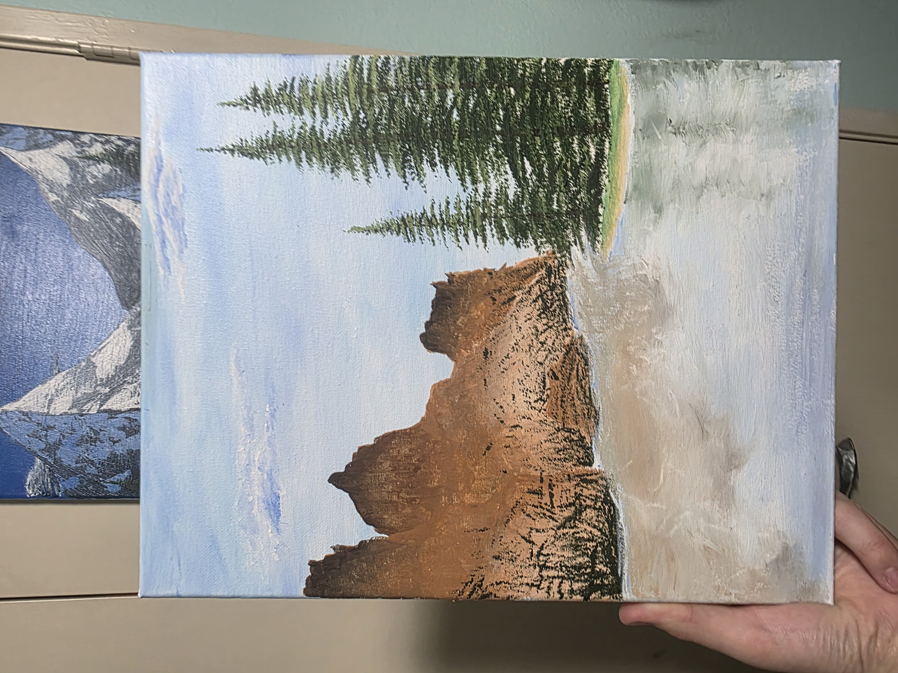

Back

Summer 2026
I used to be a colored pencil artist. Prior to fall 2025, I hadn't experiemtned with paint as a medium. In honor of that, I put some of my best colored pencil works here.

Around a month into the school year fall of 2025, I swore off pencil as a medium. Tired of the monotony of shading gradients over large expanses of paper, I made the switch to acrylic paint. While most works made during the transitionary phase aren't particularily good, I wanted to put a section here showing the pieces I made as I learned to paint instead of draw.